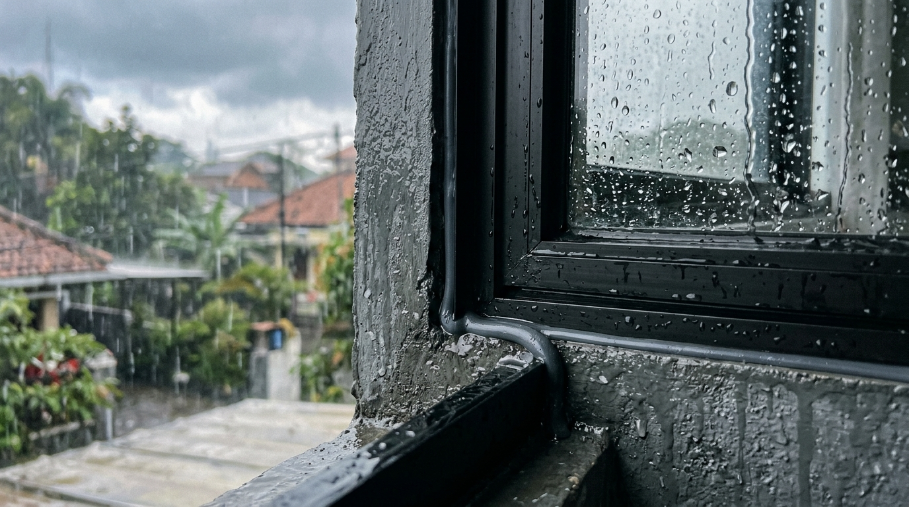
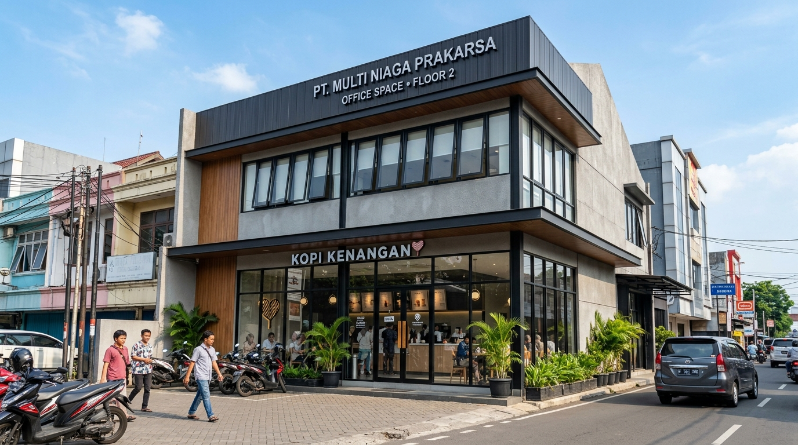

Tips Memilih Pintu Sliding Aluminium Hemat Ruang untuk Kos-Kosan di Batu
Simak tips memilih pintu sliding aluminium hemat ruang untuk kos-kosan di Batu, lengkap dengan cara mengukur bukaan pintu secara presisi.
Temukan tips praktis, perbandingan merek profil aluminium, serta panduan memilih pintu & jendela berkualitas untuk hunian di Malang Raya.
Simak tips memilih pintu sliding aluminium hemat ruang untuk kos-kosan di Batu, lengkap dengan cara mengukur bukaan pintu secara presisi.

Ikuti panduan langkah demi langkah mengatasi kusen aluminium bocor saat hujan deras dan angin kencang di Klojen menggunakan sealant silikon netral.

Bandingkan kusen aluminium Alexindo dan YKK AP di Lowokwaru dari ketebalan profil 3 inch vs 4 inch, harga, dan daya tahan.

Bandingkan kusen aluminium Alexindo dan YKK AP di Malang dari sisi ketebalan profil 3 inch vs 4 inch, harga, dan daya tahan.

Simak estimasi biaya pasang kusen aluminium per meter untuk ruko di Kepanjen, lengkap dengan simulasi biaya ruko dua lantai.

Simak studi kasus pemasangan sekat partisi kaca tempered untuk ruang meeting kantor minimalis di Pakis bergaransi.

Simak ulasan mendalam mengenai ketebalan profil, standar presisi miter, dan ketahanan warna anodized kedua merek populer ini.

Memaksimalkan bukaan teras villa dengan pencahayaan alami serta ketahanan rel stainless beban berat terhadap cuaca dingin.

Panduan teknis pencegahan rembesan air hujan dan peningkatan peredaman suara bising lingkungan sekitar rumah.
Tanyakan langsung spesifikasi terbaik, pilihan merek YKK AP / Alexindo, dan simulasi estimasi anggaran biaya kepada tim teknis KUSEN ALUMINIUM Malang.